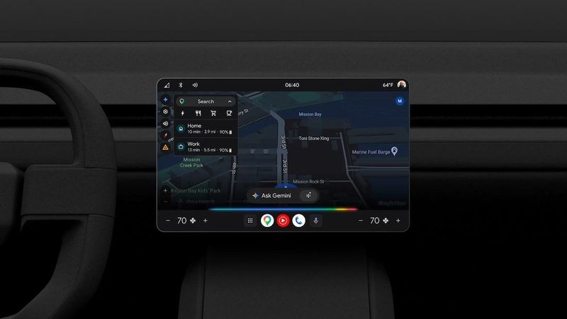
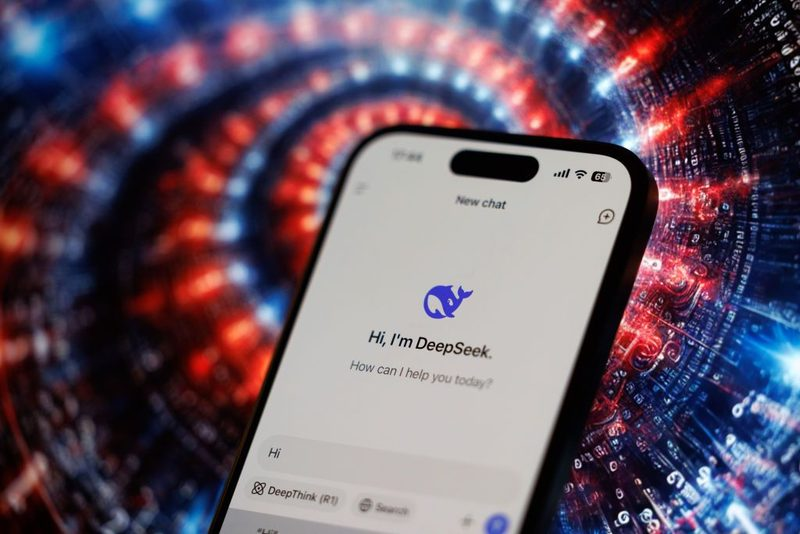
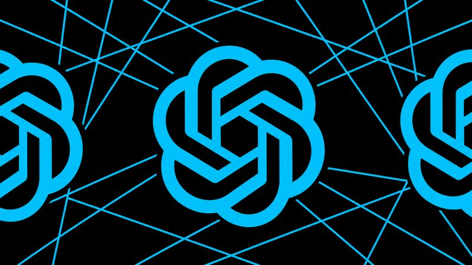
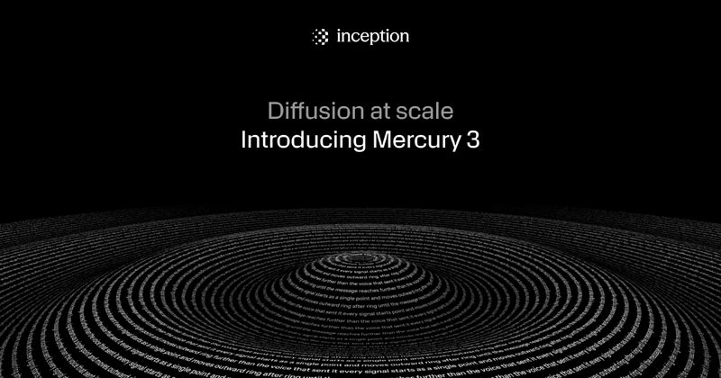
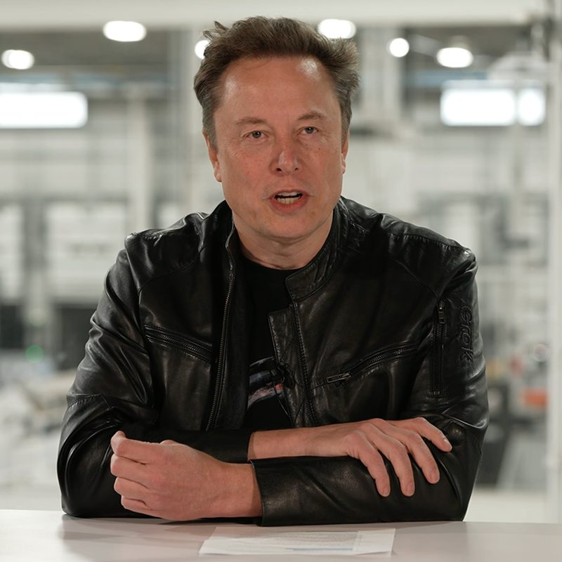

圖：TechCrunch／Google新上線#1Gemini 進車內：能看你的日曆和 Gmail 回答問題
Google 10 月 20 日宣布，車用 Gemini 加入「Personal Intelligence」個人化功能，可串接 Gmail、Google 日曆、YouTube、地圖和搜尋紀錄。Android Auto 當天開始推出，內建 Google 系統的車款會在未來幾個月跟上。
💡 跟你有什麼關係：例如開車去機場時，它能主動提醒日曆上的航班延誤，也能一次回答「登機門在哪、有沒有準時」這類連續問題，不用低頭滑手機。
⚠️ 要自己選擇開啟，可以挑要連結哪些 App、隨時關閉；個人化功能在美國以外仍是 Beta，台灣何時可用公告未說明。
📰 原始來源：TechCrunch（2026-10-20） ↗
圖：TechCrunch政策#2美國要求聯邦機關移除 DeepSeek，連衍生產品也禁
美國國土安全部 10 月 20 日下令，聯邦民間機關停止採購並從系統中移除中國 DeepSeek 的產品與服務，範圍還包括用 DeepSeek 技術做成的第三方產品，可申請例外。理由是擔心政府使用者的資料可能依中國法律被取用；中國外交部表示反對。
💡 跟你有什麼關係：這代表「用哪家 AI 模型」已經變成資安與採購問題；公司或學校若導入的工具底層用了 DeepSeek，之後可能也會被要求檢查。
⚠️ 命令只適用美國聯邦民間機關，不是一般民眾。
📰 原始來源：TechCrunch（2026-10-20） ↗圖：TechCrunch／Getty Images新聞#3OpenAI 收購生技新創 Orchestra Bio
OpenAI 10 月 20 日宣布收購成立四年的 Orchestra Bio，交易金額未公開。這家公司做 AI Agent，幫藥廠處理研發流程的瑣事，例如追蹤經費、協調臨床試驗排程；團隊將併入 OpenAI 的生命科學模型 Rosalind。
💡 跟你有什麼關係：大型 AI 公司正直接切進製藥這類大產業；長期來看可能縮短新藥從實驗室到上市的時間，但也讓同領域的小新創更難生存。
⚠️ OpenAI 表示 Moderna、Novo Nordisk 已是 Rosalind 客戶；實際能省多少研發時間尚無數據。
📰 原始來源：TechCrunch（2026-10-20） ↗
圖：The Decoder研究#4OpenAI：GPT-6 寫 COBOL 等老語言大進步
OpenAI 10 月 19 日公布兩項測試。要模型用 20 種語言從零寫出相容 SQLite 的資料庫，GPT-6 Astra 平均通過 87.4%（前代 GPT-5.6 Sol 為 26.8%），其中 COBOL 從 10.9% 升到 72.1%。把 COBOL 程式改寫成 Java、Python 等語言的測試，GPT-6.1 Sol 在高推理強度下達 97.9%。
💡 跟你有什麼關係：銀行、ATM、刷卡系統很多還跑在 COBOL 上，懂的人越來越少；AI 若真能可靠翻新，未來銀行系統升級可能更快、更少出包。
⚠️ 都是 OpenAI 自家測試；官方也表示正式使用仍需專家審核。
📰 原始來源：OpenAI（2026-10-19） ↗
圖：Inception新上線#5Mercury 3：每秒上千字的「擴散式」語言模型
新創 Inception 10 月 19 日推出 Mercury 3，它像 AI 繪圖一樣一次產生整段再逐步修正，而不是一個字一個字寫。官方說速度達每秒 1,068 tokens，比 GPT-6 Luna、Claude Haiku 5.5 快 4～8 倍，品質相當或更好；上下文 1M tokens，上市期間價格打五折。
💡 跟你有什麼關係：回應越快，語音客服、即時家教這類「要馬上回話」的 AI 體驗越自然，以後打客服等 AI 回覆的時間可能更短。
⚠️ 評比數據是 Inception 自己的，尚未經第三方驗證；模型權重不開放。
📰 原始來源：Inception（2026-10-19） ↗圖：TechCrunch／Camille Cohen／AFP／Getty Images工具#6Google 開源 TorchTPU，和 Amazon 一起挑戰 Nvidia
昨天 Amazon 推出 TorchNeuron 後，Google 10 月 20 日也把 TorchTPU 開源，讓用 PyTorch 寫的 AI 程式只改設定就能跑在 Google 自家 TPU 晶片上。Google 還推出協助搬遷的 TPU agent suite，並和 Meta、Hugging Face 等合作確保相容。
💡 跟你有什麼關係：AI 程式越容易換晶片，雲端算力的價格競爭就越激烈，長期可能讓 AI 服務更便宜。
⚠️ TechCrunch 指出，開發者不會因此馬上大量離開 Nvidia。
📰 原始來源：TechCrunch（2026-10-20） ↗ 圖：TechCrunch／Getty Images資金#7
圖：TechCrunch／Getty Images資金#7Anthropic 上市文件外流：雲端算力不夠用
《華爾街日報》取得 Anthropic 的 S-1 上市申請文件，顯示 AWS、Google、Microsoft 越來越把它當競爭對手，Anthropic 難以取得足夠算力，預估雲端合約總支出可能超過 7,500 億美元。上半年營收 163 億美元、淨損 807 億美元，據報目標 11 月上市。
💡 跟你有什麼關係：Claude 的穩定度和價格，很大程度取決於它搶不搶得到算力；這也是近來 AI 服務常限流、漲價的背景。
⚠️ 資訊來自外流文件的報導，Anthropic 未回應。
📰 原始來源：TechCrunch（2026-10-20） ↗
圖：TechCrunch／SpaceX資金#8SpaceX 第三季：AI 已佔營收一半以上
SpaceX 10 月 20 日公布第三季營收 146 億美元，其中「Super Intelligence」AI 部門營收 75 億美元、佔 52%，來源包括收購的 Cursor 程式工具、Grok 和資料中心出租。AI 部門獲利 4.31 億美元，全公司淨利 44 億美元。
💡 跟你有什麼關係：太空公司變成 AI 公司，顯示資料中心和電力正成為 AI 競爭的關鍵；你用的 Cursor 現在也屬於這個部門。
⚠️ Musk 預測 2027 年底年化營收 5,000 億到 1 兆美元，屬個人預測。
📰 原始來源：TechCrunch（2026-10-20） ↗✅ 今天可以做：如果你用 Android Auto，開啟 Gemini 個人化功能前，先想好要讓它讀哪些 App（Gmail、日曆、地圖可以分開選）。
🗂️ 過去 14 天